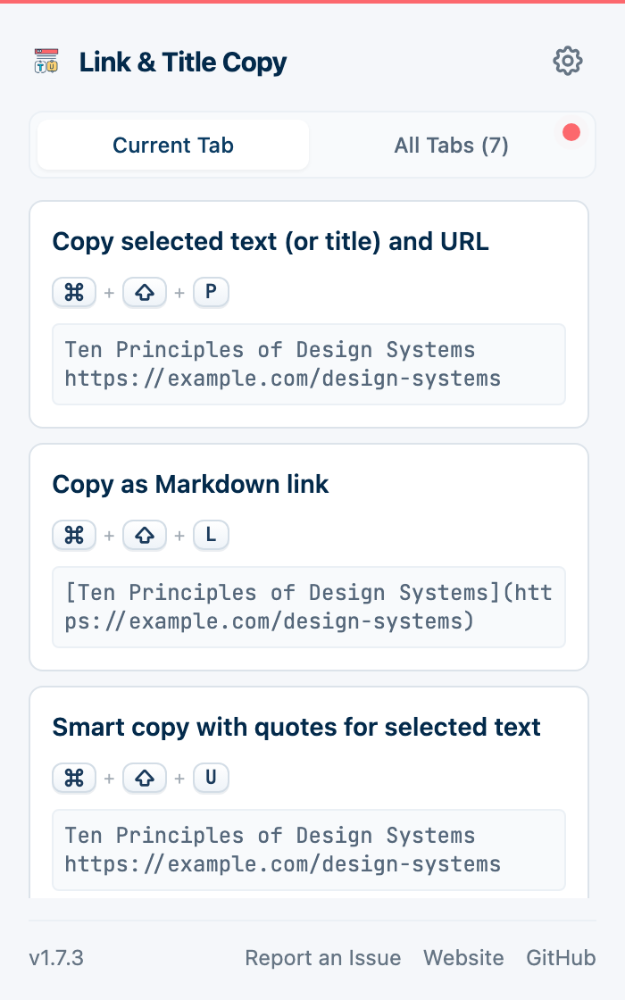
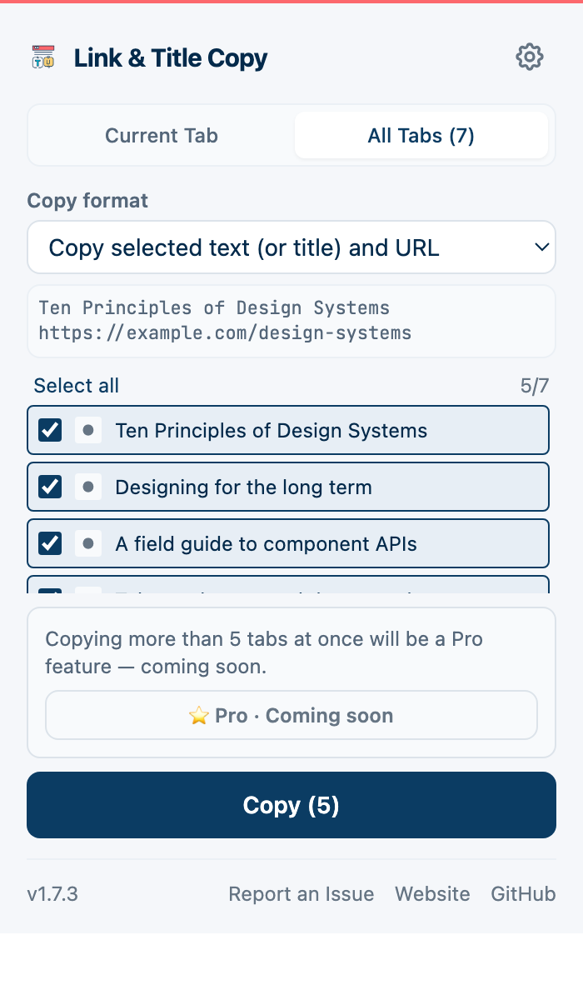
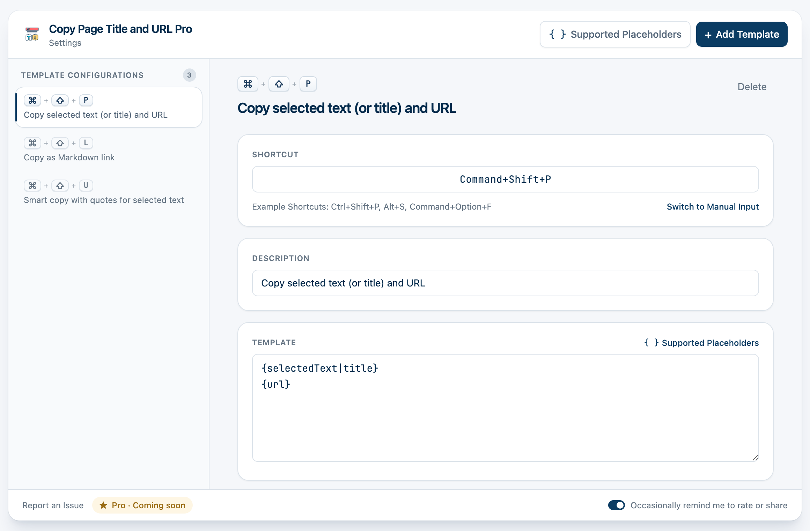

v1.13.0 全新發佈 🚀
更智慧的複製，
更智慧的複製，
更高效的貼上。
開發者和研究人員的終極瀏覽器擴充功能。一鍵清理 URL，生成 Markdown，讓你的工作流程如絲般順暢。
開發者和研究人員的終極瀏覽器擴充功能。一鍵清理 URL，生成 Markdown，讓你的工作流程如絲般順暢。
設計系統是設計與工程之間的一份契約。
設計系統是設計與工程之間的一份契約。
你需要兩樣東西：它叫什麼，以及它在哪。湊齊這兩樣，通常要來回兩趟，還得手動整理一下。
一個快捷鍵取標題和連結；另一個把你選取的內容一併帶上，引用和出處一次到位。
提示裡直接帶出複製到的內容，貼上前你就知道會貼出什麼——不用貼了才發現。
Notion、Obsidian、文件、工單、聊天視窗。貼過去就是一條真正的連結，不是兩行待整理的文字。
筆記用 Markdown，文章用 HTML，工單用 Jira 語法，也可以是你自己寫的範本。
標題、URL、URL 的各個部分、選取的文字，都有佔位符；隨意組合，綁到你順手的快捷鍵上。
不需帳號，不同步，不做統計。你的範本和複製過的頁面只留在本機，而且原始碼公開，可以自己查。
介面、引導和設定全部在地化——包括快捷鍵的寫法，會依各平台自己的慣例顯示。



讀完留下一堆分頁？勾選需要的，一次最多複製 5 條，格式還是你慣用的那個——不用一個個點開去取連結。
快速複製用於 Git 提交訊息、Jira 工單或 Markdown 文件的連結。
[設計系統的十條原則|example.com/design-systems]
簡化引用流程。輕鬆抓取部落格文章、HTML 格式連結或電子報素材。
<a href="example.com/design-systems">設計系統的十條原則</a>
完美整合 Obsidian、Logseq 和 Notion，加速構建你的第二大腦。
[設計系統的十條原則](example.com/design-systems)
分享清爽的連結給朋友，不再帶有討厭的 ?utm_... 追蹤尾巴。
example.com/design-systems?utm_source=newsletter&utm_medium=email
example.com/design-systems
已移除追蹤參數
是的，Link & Title Copy Pro 是開源的，並且永久免費。沒有任何隱藏收費。
絕對不會。我們不收集、儲存或傳輸任何用戶資料。所有操作都在你的瀏覽器本地完成。請查看我們的隱私權政策。
可以！你可以使用 {title} 和 {url} 等變數建立無限數量的自訂模板。
安裝後自帶三個：Ctrl+Shift+P 複製標題和網址，Ctrl+Shift+L 複製成 Markdown 連結，Ctrl+Shift+U 把選取的文字連同出處一起帶上。macOS 上對應 Command 鍵。這些都可以改，也可以自己新增。
可以。開啟彈出視窗切到「全部分頁」，勾選需要的，用你選的範本一起複製。免費版一次最多 5 條。